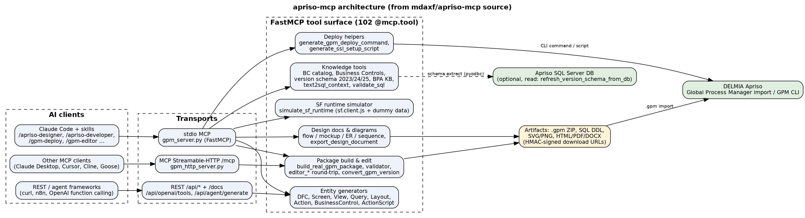
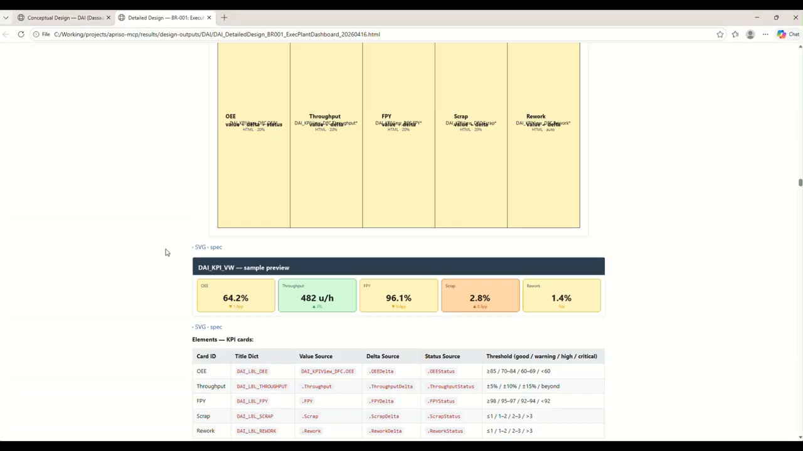
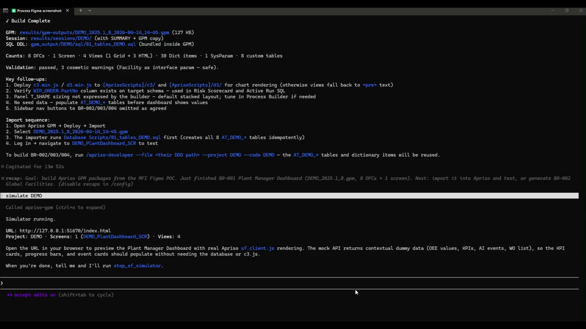
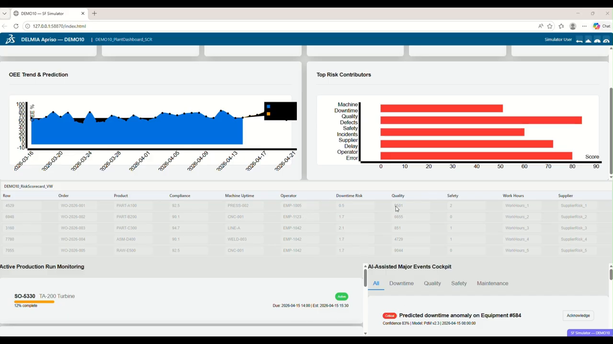

Bringing AI agents into the DELMIA Apriso SDLC: introducing apriso-mcp
Anyone who has delivered on DELMIA Apriso knows where project time goes: turning a business requirement into a CDD/DDD, then into DFCs, Views, Actions, Layouts, Screens and Queries in Process Builder, packaging it all through Global Process Manager, and finally getting it onto a server to test. Each step needs specialist knowledge of the Apriso entity model, Business Components and the database schema.
At IACF we built apriso-mcp, a Model Context Protocol (MCP) server plus a set of Claude Code skills, so an AI agent can take part in that whole flow and produce real Apriso artifacts, not just pseudo-code.
What it does (all from the repo):
🔹 Generates Apriso entities. It has tools for DFC, Screen, View, Query, Layout, Action, BusinessControl and ActionScript. It outputs authentic .gpm ZIP packages that you can import directly into Global Process Manager.
🔹 Validates before it builds. A pre-generation validator checks for 65+ common rule violations, and XML well-formedness is checked after generation.
🔹 Grounds the LLM in Apriso knowledge. It includes a Business Component catalog (2,763 methods) with a reverse table→BC index, a Business Control catalog, per-version DB schema and primary data for Apriso 2023/2024/2025, and text2sql_context + validate_sql for schema-aware SQL. A tool can also re-extract the schema from a live Apriso SQL Server.
🔹 Handles multiple versions. It emits Standard Operation for 2023/2024 and DFC for 2025, with the right FUNCTION_ schema for each.
🔹 Lets you preview without a server. An SF-runtime simulator renders the .gpm with the real sf.client.js and Apriso CSS in a local browser, and fills it with contextual dummy data.
🔹 Edits and reverse-engineers packages. You can extract an existing .gpm, modify it, and rebuild it as a new revision. An analyzer turns a deployed package into design docs and user guides, and a reverse-engineered BPA knowledge base (23 modules, 1,820 operations, 173 screens) is searchable through MCP tools.
🔹 Supports deployment. It generates GPM CLI deploy commands and SSL setup scripts.
🔹 Produces design documents. It draws flow, navigation, screen-mockup, ER and sequence diagrams and exports CDD/DDD to HTML, PDF or DOCX.
Architecture: a single FastMCP server (102 tools) exposed over three transports:
• stdio, for Claude Code and local MCP clients
• MCP Streamable-HTTP at /mcp, for remote agents
• a REST API at /api/* with Swagger, including an OpenAI function-calling bridge

It runs locally, in Docker, or on a multi-replica cloud deployment. HMAC-signed, time-bound URLs move artifacts from cloud to local, and the code includes path-traversal and expiry checks.
In the demo video, the skills map to project roles: Designer → Solution Architect, Developer → Technical Consultant, Simulator → Functional Consultant, Deployer → Deployment Engineer. It starts from a drawing: /apriso-designer turns it into a CDD (conceptual design), then a DDD (detailed design) with KPI cards for OEE, Throughput, FPY, Scrap and Rework, including data sources and thresholds. /apriso-developer then builds a 2025 .gpm (8 DFCs, 1 screen, 4 views, 8 custom tables, validation passed), and "simulate DEMO" previews the Plant Manager Dashboard in the SF simulator before anything is deployed.



From a manufacturing-software point of view, I care less that an LLM writes code and more that the output is a native, importable, validated Apriso package built on the same Business Components and schema that your MES already uses.
Note: apriso-mcp is an IACF solution, and access requires approval from the IACF team (www.iacf.us).
🎥 Demo: https://www.youtube.com/watch?v=Nzrbvduf18Q
#DELMIAApriso #MES #ManufacturingIT #MCP #AIAgents #SmartManufacturing #Industry40